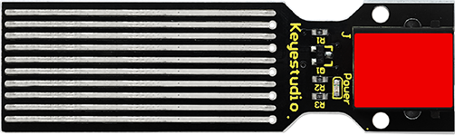
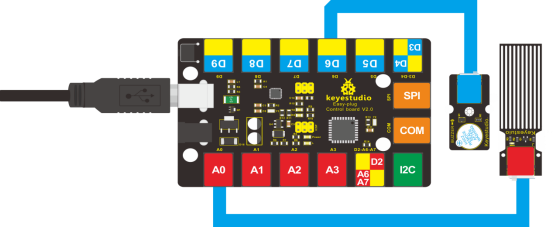

Use a foil pad outside a dry plastic cup, a 10 MΩ resistor, and Arduino digital pins 2 and 3 to print a changing water-level reading at 115200 baud.
Gather the parts
Uno-compatible board and USB cable
Breadboard
1 resistor marked 10 MΩ
A supervising adult needs to help identify the 10 MΩ resistor from the kit label or a suitable meter
Aluminum foil and tape
1 empty, clean plastic cup or container with a dry outside surface
Jumper wires
Important: this lesson is for the RBD capacitance method, not a three-pin or exposed-metal “water sensor” module. The foil is taped to the outside of a non-conductive, watertight plastic container. Do not put foil, jumper wires, the breadboard, or the Arduino into water. Work over a tray, unplug USB before rewiring, and stop if anything becomes wet. Use only USB power—never mains power, a battery charger, or a mains-powered appliance near this build.
Build it, one check at a time
Step 1 — Meet the dry sensor
This project measures a relative change in capacitance. Water inside the cup changes the electrical behavior of a foil pad on the outside. It is not a leak alarm and it does not measure an exact volume. The source warns that nearby objects and electronics can affect this kind of reading, so calibration belongs to this particular cup and location.

Comparable sensor reference image: Keyestudio, Project 10 Water Level Alarm. This is an exposed-trace analog sensor, not this lesson’s dry RBD foil-and-cup capacitive sensor. It is included only so you can recognize that the two designs are different.

Comparable circuit reference image: Keyestudio, Project 10 Water Level Alarm. Its A0 sensor and D6 buzzer wiring are not used here; do not copy them into this RBD D2–10 MΩ–D3 build.
Arduino D2→10 MΩ resistor→Arduino D3
Arduino D3 → foil pad outside plastic cup
Water stays inside the cup. Foil, board, and wires stay dry.
Wiring map: original text rendering of the RBD capacitance reference wiring. The Water Sensor page’s first numbered resistor value conflicts with its 10 MΩ diagram; this lesson follows the matching RBD Capacitance page, whose numbered wiring and diagram both specify 10 MΩ.
Step 2 — Make the outside foil pad
With USB unplugged, tear a flat piece of aluminum foil and tape it firmly to the outside of the empty plastic cup at the height you want to notice. Keep a dry foil edge available for a jumper connection. The foil must not touch water or bridge to any powered metal object. Place the cup where it will be used; moving it later can change the reading.
Step 3 — Wire the capacitance path
Put the 10 MΩ resistor on the breadboard. Connect Arduino digital pin 2 → one resistor lead. Connect the resistor’s other lead to Arduino digital pin 3. From that same pin-3/resistor row, run one jumper to the dry foil edge. There is no 5 V or GND wire in this source circuit.
Pause and trace only these three connections: D2, resistor, D3-and-foil. Do not substitute a small LED resistor. The matching RBD Capacitance documentation specifies 10 MΩ in both its numbered wiring and reference diagram. A 10 MΩ resistor is not the same as the common 220 Ω, 1 kΩ, or 10 kΩ kit resistors. Ask your supervising adult to confirm the part from the labeled kit bag, a parts list, or a meter that has a 10 MΩ range. If you cannot positively identify a 10 MΩ resistor, stop here and do not power or substitute a resistor.
Step 4 — Install the three matching libraries
The retained MIT example requires RBD_Capacitance, RBD_Threshold, and RBD_WaterSensor. In Arduino IDE, install all three by their exact names using Sketch → Include Library → Manage Libraries… (or add their matching ZIP releases). Reconnect USB only after the wiring check, then choose your Uno-compatible board and serial port.
The library’s constructor uses the pin order send, receive, levels. In this lesson, that is pin 2, pin 3, and three levels. Do not change pins in code unless you also rebuild and recalibrate the circuit.
Step 5 — Upload, observe, then calibrate
Upload this source-matched calibration sketch. It prints only when the raw value changes. Open Tools → Serial Monitor at 115200 baud. First observe values with the cup empty, then add water slowly while the electronics remain dry. Record three steady raw values at meaningful levels for your cup. Replace the sample values only after that observation, upload again, and repeat the comparison.
What success looks like: the Serial Monitor shows changing raw values and an active level as water rises or falls. The numbers 120, 154, 187, and 220 are the source example’s calibration data, not universal measurements. If values jump around, do not add power or touch wet parts: unplug USB, dry the work area, keep the cup still, check the D2–resistor–D3 path, and collect new readings for this cup. This learning sensor is not suitable for flood protection, drinking-water safety, or any safety-critical decision.
Tiny challenge
Without changing the wiring, predict what happens when you move your hand near the foil or move the cup to a new table. Try it with dry hands, then explain why the source asks you to calibrate the sensor where it will be used. Which method prints the raw number, and which one turns that number into a level?
Technical behavior and the original code structure were verified against the retained RBD_WaterSensor MIT source pack and its public documentation. The two local Keyestudio images are a clearly labeled comparison only, not the RBD build diagram: their exposed-trace/A0/D6 design must not replace this lesson’s dry foil, 10 MΩ, D2/D3 method. Keyestudio attribution and the direct source page are visible beside the images; their inclusion is based on the project operator’s user-authorized reuse instruction, not an inferred upstream license.